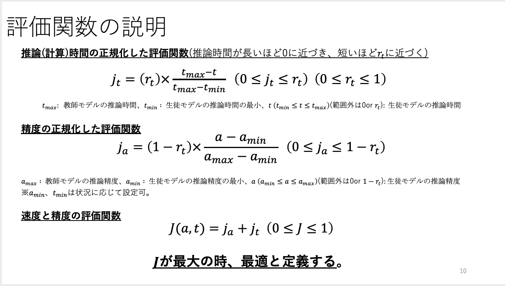
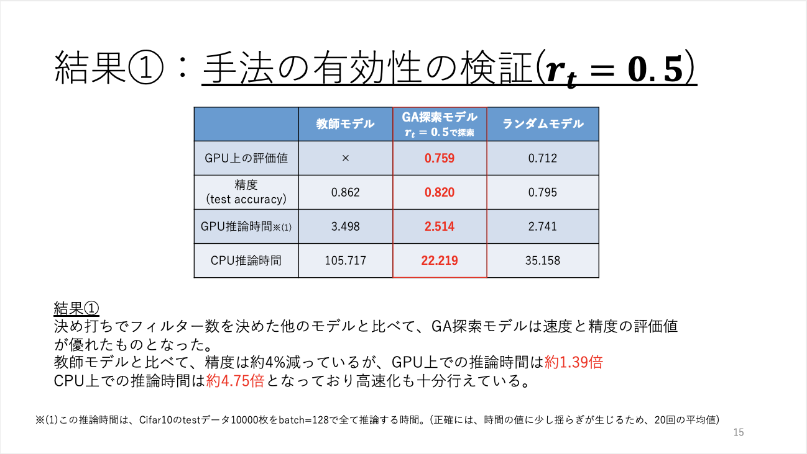
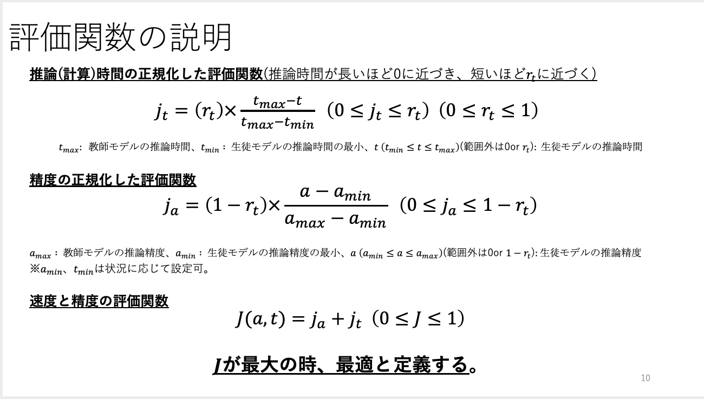
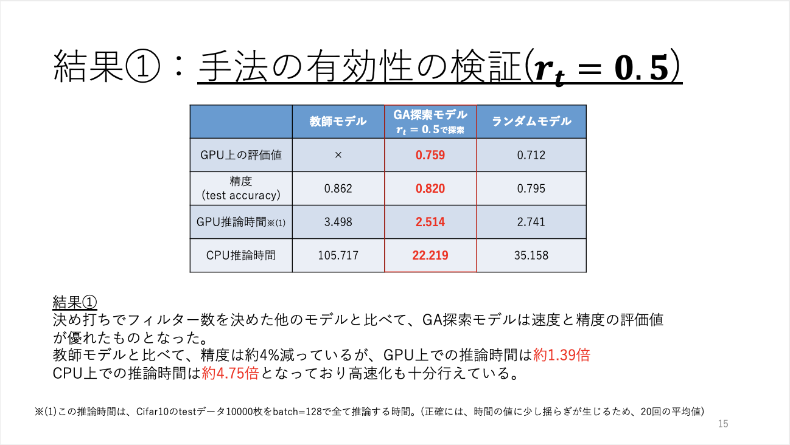

研究室での新人賞獲得(3年春学期)

概要
3年の春学期に研究室内での新人賞を獲得したものです。
発表題名[蒸留による生徒モデルの最適化]
詳細
自ら評価関数を定義し、遺伝的アルゴリズムによって速度と精度の両方が優れたモデルを探索する。
また、パラメータの調節により速度重視、精度重視のモデルの探索や精度や速度において最低基準を設けた探索にも成功している。(11/30現在)

実際に、一般的な手作業での生徒モデルよりも優れたモデルの探索に成功した。
3年の春学期に研究室内での新人賞を獲得したものです。
発表題名[蒸留による生徒モデルの最適化]
詳細
自ら評価関数を定義し、遺伝的アルゴリズムによって速度と精度の両方が優れたモデルを探索する。
また、パラメータの調節により速度重視、精度重視のモデルの探索や精度や速度において最低基準を設けた探索にも成功している。(11/30現在)

実際に、一般的な手作業での生徒モデルよりも優れたモデルの探索に成功した。